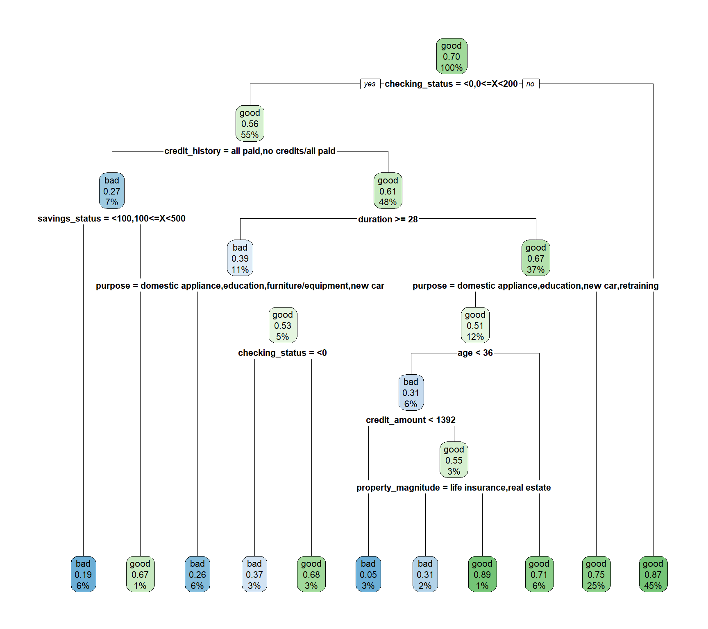

Contenido
1. Información general (requisitos previos, bibliotecas, etc).
2. Análisis inicial de los datos. Como el objetivo principal del documento es entrenar un modelo de árbol de decisión con R, el análisis inicial incluye sólo una parte exploratoria y algunas pruebas estadísticas.
3. Entrenamiento de modelo por defecto con rpart.
4. Ajuste de hiperparámetros con la biblioteca caret. La métrica para evaluar el desempeño predictivo de los modelos es el área bajo la curva ROC.
5. Material complementario.
6. Recursos de información.
Requisitos previos
- Instalar las bibliotecas
rparty rpart.plot para entrenar y gráficar modelos basados en árboles. - Instalar la biblioteca
caret. - Descargar datos para ejemplo desde la página openML. La base de datos proporciona información de personas perfiladas con riesgo crediticio bueno o malo.
-
Bibliotecas complementarias: para visualizaciones
ggplot2,jcolorsyhrbrthemes, para manejo de datosdplyry para métricas de error y/o precisiónMetricsypROC.
Bibliotecas
Descripción de variables
- Además de la variable respuesta class, se cuenta con las siguientes 20 variables.

Datos
- Se importan los datos y se aplica la función
mutate_if()para eliminar las comillas simples (’’) que están presentes en las variables tipo texto (character). A continuación sólo se muestran 5 variables (columnas) con 10 observaciones. La variableclasses nuestro target o variable respuesta.
Código
- Dimensión de la base de datos:
Código
dim(data)[1] 1000 21Distribución de variable respuesta
Código
data %>%
ggplot(mapping = aes(x = class, fill = class)) +
geom_bar(color = "black") +
scale_fill_manual(values = c("#5A5156", "#F6222E")) +
theme_ipsum() +
theme(legend.position = "none")Exploratorio
- Distribución de edad por variable objetivo: se puede apreciar que la edad promedio de los clasificados como “buenos” es más alta, además, los clasificados como “malos” en su mayoría son personas entre 20 y 30 años de edad.
Código
data %>%
ggplot(mapping = aes(x = class, y = age, fill = class)) +
geom_violin() +
geom_boxplot(color = "#E4E1E3", width = 0.1, show.legend = FALSE) +
stat_summary(fun.y = mean, color = "#E4E1E3", pch = 17) +
scale_fill_manual(values = c("#5A5156", "#F6222E")) +
theme_ipsum() +
theme(legend.position = "none") +
labs(caption = "El triángulo representa el promedio."))- Propósitos de crédito más frecuentes: la distribución de personas clasificadas como buenas o malas cuando el propósito es vehículo, discrepa bastante entre la opción de nuevo o usado. En vehículos usados la gran mayoría son clasificados como “buenos”, sin embargo, cuando se trata de vehículos nuevos, la distribución es similar, lo que permite inferir que es más probable que una persona se comporte como mal pagador en créditos para vehículo nuevo respecto a créditos para vehículos usados. También se podría intuir que cuando se trata de créditos para educación es igual de probable que la persona sea clasificada como “bueno” o “malo”.
Código
data %>%
group_by(class, purpose) %>%
count() %>%
ggplot(mapping = aes(x = reorder(purpose, n), y = n, fill = class)) +
geom_col(color = "#E4E1E3", position = "dodge") +
scale_fill_manual(values = c("#5A5156", "#F6222E")) +
labs(x = "Purpose") +
theme_ipsum() +
theme(legend.position = "top",
axis.text.x = element_text(angle = 45, hjust = 1))Inferencia
- Análisis de varianza: en vista de la discrepancia que se observa en la distribución de las edades para personas clasificadas como “buenas” o “malas”, realizo el análisis de varianza para contrastar si dichas diferencias son estadísticamente significativas. Nota: aunque nuestra variable respuesta es class, en este caso actúa como “predictora” o fuente de variación.
Df Sum Sq Mean Sq F value Pr(>F)
class 1 1074 1073.5 8.357 0.00393 **
Residuals 998 128198 128.5
---
Signif. codes: 0 '***' 0.001 '**' 0.01 '*' 0.05 '.' 0.1 ' ' 1- El resultado de la prueba muestra que existe evidencia estadísticamente significativa (p=0.00393) para considerar que la variación de la edad entre ambos grupos es diferente.
Árboles de decisión

Generalidades

- Los árboles de decisión se pueden utilizar para problemas de regresión y clasificación.
- Se pueden definir como una estructura jerárquica que busca particionar el espacio de características e identificar subconjuntos representativos. Desde la parte superior a inferior cada árbol tiene nodo raíz, nodos de decisión o internos y nodos hojas o terminales, los dos primeros se generan con base en reglas binarias. Mayor grado de pureza es la recompensa que busca el algoritmo al particionar el espacio inicial en subregiones, en ese orden de ideas el objetivo siempre será particionar los datos en nodos que sean lo más puros posible, sin embargo, matemáticamente es más fácil medir la impureza de una región específica, proporcionando una idea de qué tan heterogéneas son las clases en ese nodo; una métrica de uso común en problemas de clasificación para medir la impureza es el índice GINI, donde valores bajos indican mayor grado de pureza. Además del índice GINI también es posible utilizar otras métricas como la ganancia de información o la entropía.
-
Ventajas:
- Fácil de interpretar (sujeto a la profundidad).
- No requieren estandarización o normalización de variables predictoras numéricas.
- Permiten manipular variables categóricas sin necesidad de aplicar codificaciones tipo one-hot o variables dummy.
- Requieren poco preprocesamiento de datos.
- Permiten valores ausentes (
NA). - Permite relaciones no lineales.
-
Desventajas:
- Si no se controla adecuadamente la profundidad del árbol existe alta probabilidad de incurrir en sobreajuste (overfitting).
- Alta varianza, pequeños cambios en los datos pueden arrojar resultados muy diferentes.
-
Hiperparámetros: aunque ejecutar la función
rpart()con valores predeterminados puede ser una buena estrategia para iniciar, siempre estaremos interesados en ajustar determinados parámetros que nos permitan obtener mejor rendimiento predictivo. La funciónrpart.control()permite controlar manualmente otras opciones. Dentro los hiperparámetros más importantes en árboles de decisión están los siguientes:- Mínimo número de observaciones para generar una partición. En la biblioteca
rpartlleva el nombre deminsplity su valor por defecto es 20. - Máxima profundiad del árbol. En la biblioteca
rpartlleva el nombre demaxdepthy su valor predeterminado es 30. Este parámetro es de alta relevancia para evitar el sobreajuste. - Parámetro de complejidad. En la biblioteca
rpartlleva el nombre decpy su valor por defecto es 0.01. Este parámetro sirve al propósito de penalizar y contolar el tamaño del árbol, valores bajos indican árboles de mayor complejidad, es decir, mayor número de divisiones. La funciónrpart()internamente ejecuta validación cruzada 10 veces para estimar el valor óptimo de cp, es posible acceder a dicho resultado a través de la funciónplotcp()que permitirá facilmente determinar el valor adecuado para este parámetro. Cuando se tiene el valor óptimo de cp será posible “podar” el árbol para que el modelo sea optimizado, dicho resultado es posible a través de la funciónprune().
- Mínimo número de observaciones para generar una partición. En la biblioteca
Train - Test
- Para entrenar el modelo inicialmente fracciono los datos en train y test con proporciones de 70 y 30%, respectivamente. Este proceso aunque es posible hacerlo manualmente con la función
sample(), la funcióncreateDataPartition()del paquetecaretagiliza el procedimiento. Para garantizar replicabilidad en los resultados se agrega la semilla.
Código
set.seed(1992)
idx <- createDataPartition(y = data$class, times = 1, p = 0.70, list = FALSE)
dataTrain <- data[idx, ]
dataTest <- data[-idx, ]
rpart default
-
Ajuste del modelo: en este caso se utilizan todas las variables predictoras para entrenar el modelo. Al imprimir el objeto que contiene el modelo podemos observar el conjunto de reglas que dan como resultado la estructura final del árbol. El método igualado a
method = "class"indica que es un problema de clasificación, si fuese un problema de regresión el argumento tomaría el valor demethod = "anova", aunque también permite otras opciones (consulte?rpartohelp("rpart")).
Código
modArbol0 <- rpart(class ~ ., data = dataTrain, method = "class")
modArbol0n= 700
node), split, n, loss, yval, (yprob)
* denotes terminal node
1) root 700 210 good (0.3000000 0.7000000)
2) checking_status=<0,0<=X<200 385 168 good (0.4363636 0.5636364)
4) credit_history=all paid,no credits/all paid 51 14 bad (0.7254902 0.2745098)
8) savings_status=<100,100<=X<500 42 8 bad (0.8095238 0.1904762) *
9) savings_status=500<=X<1000,no known savings 9 3 good (0.3333333 0.6666667) *
5) credit_history=critical/other existing credit,delayed previously,existing paid 334 131 good (0.3922156 0.6077844)
10) duration>=27.5 77 30 bad (0.6103896 0.3896104)
20) purpose=domestic appliance,education,furniture/equipment,new car 39 10 bad (0.7435897 0.2564103) *
21) purpose=business,other,radio/tv,repairs,used car 38 18 good (0.4736842 0.5263158)
42) checking_status=<0 19 7 bad (0.6315789 0.3684211) *
43) checking_status=0<=X<200 19 6 good (0.3157895 0.6842105) *
11) duration< 27.5 257 84 good (0.3268482 0.6731518)
22) purpose=domestic appliance,education,new car,retraining 83 41 good (0.4939759 0.5060241)
44) age< 35.5 42 13 bad (0.6904762 0.3095238)
88) credit_amount< 1392 20 1 bad (0.9500000 0.0500000) *
89) credit_amount>=1392 22 10 good (0.4545455 0.5454545)
178) property_magnitude=life insurance,real estate 13 4 bad (0.6923077 0.3076923) *
179) property_magnitude=car,no known property 9 1 good (0.1111111 0.8888889) *
45) age>=35.5 41 12 good (0.2926829 0.7073171) *
23) purpose=business,furniture/equipment,other,radio/tv,repairs,used car 174 43 good (0.2471264 0.7528736) *
3) checking_status=>=200,no checking 315 42 good (0.1333333 0.8666667) *-
Gráfico del modelo: la variable más importante y que da origen al nodo raíz es
checking_status, que hace referencia al estado de la cuenta corriente. El historial crediticio, la duración del tiempo para pagar el crédito, el estado de la cuenta de ahorros y el propósito del crédito, también son factores determinantes. No tener suficiente capital en cualquiera de las dos cuentas, tener mal historial crediticio y además solicitar períodos de pago de alta duración, pueden ser características no deseables a la hora de solicitar un crédito.
Código
rpart.plot(modArbol0)
- Matriz de confusión: el modelo por default tiene precisión promedio de 0.7167, con dificultades para clasificar de forma correcta los “malos”, es decir, que tiene baja especificidad.
Código
predichos_mod0 <- predict(object = modArbol0, newdata = dataTest, type = "class")
confusionMatrix(data = predichos_mod0, reference = as.factor(dataTest$class),
positive = "good")Confusion Matrix and Statistics
Reference
Prediction bad good
bad 31 26
good 59 184
Accuracy : 0.7167
95% CI : (0.662, 0.767)
No Information Rate : 0.7
P-Value [Acc > NIR] : 0.2873596
Kappa : 0.2465
Mcnemar's Test P-Value : 0.0005187
Sensitivity : 0.8762
Specificity : 0.3444
Pos Pred Value : 0.7572
Neg Pred Value : 0.5439
Prevalence : 0.7000
Detection Rate : 0.6133
Detection Prevalence : 0.8100
Balanced Accuracy : 0.6103
'Positive' Class : good
- Área bajo la curva:
Código
# Probabilidades predichas para la clase "good"
pred0 <- as.data.frame(predict(object = modArbol0,
newdata = dataTest, type = "prob"))$good
# Transformando respuesta a entero. A la clase "good" le agrego 1 y
# a la clase "bad" le agrego 0.
target <- as.integer(as.factor(dataTest$class)) - 1
# AUC
Metrics::auc(actual = target, predicted = pred0)[1] 0.7034392- Curva ROC: la función con la que obtengo el siguiente gráfico puede ser encontrada en mi Github.
Código
# Cargando funciónn
source("functions/myROC.R")
# Ver función myROC() al final en material complementario
myROC(predichos = pred0, reales = target)- Parámetro de complejidad (CP):
Código
plotcp(modArbol0)- “Podando” el árbol: se elige el valor de cp = 0.025 por mostrar mejores resultados (bajo error).
Código
modArbol0_prune <- prune(tree = modArbol0, cp = 0.025)
modArbol0_prunen= 700
node), split, n, loss, yval, (yprob)
* denotes terminal node
1) root 700 210 good (0.3000000 0.7000000)
2) checking_status=<0,0<=X<200 385 168 good (0.4363636 0.5636364)
4) credit_history=all paid,no credits/all paid 51 14 bad (0.7254902 0.2745098) *
5) credit_history=critical/other existing credit,delayed previously,existing paid 334 131 good (0.3922156 0.6077844)
10) duration>=27.5 77 30 bad (0.6103896 0.3896104) *
11) duration< 27.5 257 84 good (0.3268482 0.6731518)
22) purpose=domestic appliance,education,new car,retraining 83 41 good (0.4939759 0.5060241)
44) age< 35.5 42 13 bad (0.6904762 0.3095238) *
45) age>=35.5 41 12 good (0.2926829 0.7073171) *
23) purpose=business,furniture/equipment,other,radio/tv,repairs,used car 174 43 good (0.2471264 0.7528736) *
3) checking_status=>=200,no checking 315 42 good (0.1333333 0.8666667) *- Gráfico de árbol con “poda”:
Código
rpart.plot(modArbol0_prune)- Matriz de confusión árbol con “poda”: respecto al árbol sin podar, la diferencia en precisión es muy pequeña (<0.01), sin embargo, la especificidad se aumenta de 0.3444 a 0.4556 con la “poda”, aunque la sensitividad haya reducido de 0.8762 a 0.8381.
Código
predichos_mod0_prune <- predict(object = modArbol0_prune, newdata = dataTest, type = "class")
confusionMatrix(data = predichos_mod0_prune, reference = as.factor(dataTest$class),
positive = "good")Confusion Matrix and Statistics
Reference
Prediction bad good
bad 41 34
good 49 176
Accuracy : 0.7233
95% CI : (0.669, 0.7732)
No Information Rate : 0.7
P-Value [Acc > NIR] : 0.2072
Kappa : 0.3083
Mcnemar's Test P-Value : 0.1244
Sensitivity : 0.8381
Specificity : 0.4556
Pos Pred Value : 0.7822
Neg Pred Value : 0.5467
Prevalence : 0.7000
Detection Rate : 0.5867
Detection Prevalence : 0.7500
Balanced Accuracy : 0.6468
'Positive' Class : good
- Área bajo la curva de árbol con “poda”:
Código
# Probabilidades predichas para la clase "good"
pred0_prune <- as.data.frame(predict(object = modArbol0_prune,
newdata = dataTest, type = "prob"))$good
# AUC
Metrics::auc(actual = target, predicted = pred0_prune)[1] 0.7203175- Curva ROC:
Código
# Ver función myROC() al final en material complementario
myROC(predichos = pred0_prune, reales = target)Tuning con caret
- A diferencia de los parámetros que se “aprenden” duarante el entrenamiento del modelo, los hipeparámetros se definen previo al ajuste del mismo.
- El ajuste de hiperparámetros se constituye como parte fundamental de la optimización del modelo.
- La biblioteca
caretproporciona un marco de trabajo unificado para entrenar y validar modelos de machine learning. En este caso, concaretpodremos ajustar dos de los tres hiperparámetros mencionados anteriormente, el parámetro de complejidad y la profundidad del árbol. Las funcionestrainControl()ytrainde la bibliotecacaretfacilitan el proceso.-
trainControl(): permite establecer la estrategia de validación, por ejemplo validación cruzada k-fold, validación cruzada repetida, bootstrapping, entre otras. Desde esta misma función también es posible determinar el método de búsqueda de hiperparámetros, que puede ser aleatoria o cuadrícula (grid). En este caso particular utilizo validación cruzada con repeticiones, con k = 5 y 3 repeticiones. El argumentosummaryFunction = twoClassSummarypermite computar las métricas necesarias (sensitividad y especificidad) para obtener ROC. Busque más ayuda conhelp("trainControl"). -
train(): ajuste el modelo estableciendo la fórmula habitual en R, el método o algoritmo para entrenar, (lista de algoritmos encaret) los datos, la configuración para el entrenamiento (tcConrol = myControl) y la longitud de hiperparámetros a considerar en el entrenamiento (tuneLenth). Este último argumento dependerá de los hiperparámetros que estén disponibles encaret, aunque también es posible asignarlos manualmente a través deexpand.grid(). Utilizar el método igualado a “rpart” permitirá optimizar el parámetro cp y utilizando “rpart2” es posible optimizar la máxima profundidad del árbol. Cuando se declaratuneLength = 5se informa que el número máximo de profundidades a probar será 5, es decir, que al final existirán 5 resultados diferentes con el mismo algoritmo. Por último, se agrega la métrica que será utilizada para comparar los resultados de la validación cruzada.
-
- Nota: como el procedimiento de validación cruzada implica muestreo aleatorio, es necesario asignar la semilla para garantizar replicabilidad de resultados.
Código
myControl <- trainControl(method = "repeatedcv",
number = 5,
repeats = 3,
classProbs = TRUE, # Permite predecir probabilidades
summaryFunction = twoClassSummary)
set.seed(1992)
modArbol_tune <- train(class ~ .,
method = "rpart2",
data = data,
trControl = myControl,
tuneLength = 5,
metric = "ROC")
modArbol_tuneCART
1000 samples
20 predictor
2 classes: 'bad', 'good'
No pre-processing
Resampling: Cross-Validated (5 fold, repeated 3 times)
Summary of sample sizes: 800, 800, 800, 800, 800, 800, ...
Resampling results across tuning parameters:
maxdepth ROC Sens Spec
3 0.7028968 0.3011111 0.8885714
6 0.7138095 0.3244444 0.8880952
11 0.7211151 0.3988889 0.8642857
14 0.7213571 0.4055556 0.8623810
18 0.7211746 0.3911111 0.8671429
ROC was used to select the optimal model using the largest value.
The final value used for the model was maxdepth = 14.- Se observa que la mejor profundidad es 14 con la mayor sensitividad aún cuando no tiene la mejor especificidad. A continuación la matriz de confusión en el conjunto de test muestra mejoras en la capacidad de detectar los clasificados como “malos”, ademas la precisión es notablemente superior.
Código
predichos_tune <- predict(object = modArbol_tune, newdata = dataTest, type = "raw")
confusionMatrix(data = predichos_tune, reference = as.factor(dataTest$class),
positive = "good")Confusion Matrix and Statistics
Reference
Prediction bad good
bad 52 29
good 38 181
Accuracy : 0.7767
95% CI : (0.7253, 0.8225)
No Information Rate : 0.7
P-Value [Acc > NIR] : 0.001839
Kappa : 0.4526
Mcnemar's Test P-Value : 0.328393
Sensitivity : 0.8619
Specificity : 0.5778
Pos Pred Value : 0.8265
Neg Pred Value : 0.6420
Prevalence : 0.7000
Detection Rate : 0.6033
Detection Prevalence : 0.7300
Balanced Accuracy : 0.7198
'Positive' Class : good
- Área bajo la curva el modelo evidentemente consigue mejores resultados respecto a los ajustados inicialmente, de tal manera que el ajuste de hiperparámetros ha logrado mejorar nuestras predicciones en datos que el modelo aún no ha visto. Posiblemente el hecho de ajustar la máxima profundidad sumado al uso de validación cruzada, permite que el modelo capture de mejor manera las relaciones subyacentes entre características.
Código
# Probabilidades predichas para la clase "good"
pred_tune <- as.data.frame(predict(object = modArbol_tune,
newdata = dataTest, type = "prob"))$good
# AUC
Metrics::auc(actual = target, predicted = pred_tune)[1] 0.7888624- Curva ROC:
Código
# Ver función myROC() al final en material complementario
myROC(predichos = pred_tune, reales = target)Complementario
Función plot + caret
- La función
plot()tiene un método específico para resultados obtenidos a través decaret, en este caso muestra el gráfico del hiperparámetro de interés, la máxima profundidad del árbol vs la curva ROC en el eje Y, tratando de evidenicar el valor óptimo.
Código
plot(modArbol_tune)Gráfico interactivo con visNetwork
- La biblioteca
visNetworkpermite crear gráficos interactivos para objetos de la clase rpart. A manera de ejemplo se presenta el gráfico para el árbol de decisión con poda. Recuerde que es interactivo y puede manipularlo con el mouse.
Código
library(visNetwork)
visTree(modArbol0_prune,
main = "Árbol con poda"", width=="100%"",
height = "800px", edgesFontSize = 14, nodesFontSize = 16,)Función myROC()
- Es necesario tener cargadas las bibliotecaS
dplyr,ggplot2,hrbrthemes,MetricsypROCpara ejecutar la función.
Código
myROC <- function(predichos, reales) {
suppressMessages(suppressWarnings(library(dplyr)))
suppressMessages(suppressWarnings(library(ggplot2)))
suppressMessages(suppressWarnings(library(pROC)))
suppressMessages(suppressWarnings(library(Metrics)))
x = roc(reales, predichos)
df = data_frame(TPR = x$sensitivities,
FPR = 1 - x$specificities)
gg = df %>%
ggplot(aes(x = FPR, ymin = 0, ymax = TPR)) +
geom_polygon(aes(y = TPR), fill = "#5A5156", alpha = 0.7) +
geom_path(aes(y = TPR), col = "#F6222E", size = 1.3) +
geom_abline(
intercept = 0,
slope = 1,
color = "gray37",
size = 1,
linetype = "dashed"
) +
theme_ipsum() +
coord_equal() +
labs(
x = "FPR (1 - Especificidad)",
y = "TPR (Sensitividad)",
title = paste0("Curva ROC"),
subtitle = paste0(
"Valor AUC: ",
Metrics::auc(actual = reales,
predicted = predichos) %>% round(4)
)
)
return(gg)
}